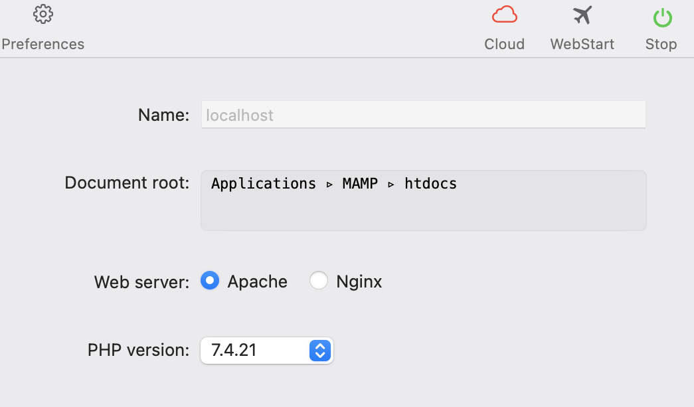
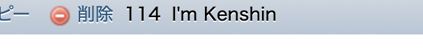

Hello!
・取得するにはSelect文を使います。
・前回使用したplayersテーブルからデータを取得します。
・まずMAMPを開いて、右上のスタートボタンを押します。

・前々回ほどに作成したhtdocsにあるcreate.phpを開いてください。
・まずは変数を書きます。
$format = "mysql:host=localhost; dbname=%s; charset=utf8";
$dsn = sprintf($format, 'football');
$username = "root";
$password = "root";
・formatの後にDB名のfootballを入力してください。
・usernameとpasswordはrootです。
・次にログインのコードを書きます。
try {
$dbh = new PDO($dsn, $username, $password);
echo 'YES';
} catch (PDOException $e) {
$msg = $e->getMessage();
echo $msg;
}
・トライで囲み、エラーをキャッチできるようにします。
・PDOクラスを使いログインします。
・echoで書き出すことによって成功しているかを確認できます。
・確認方法は、http://localhost/create.phpでできると思います。
・Select文を書きます。
$sql = "SELECT * FROM players";
・最後尾にテーブル名を書き込みます。
・次に実行します。
$prepare = $dbh->prepare($sql);
$prepare->execute();
・これでデータは取得できました。
・しかしこれでは、取得できているのかわからないので表示させます。
・変数にデータを入れる。
$result = $prepare->fetchAll(PDO::FETCH_ASSOC);
・次に表示します。
foreach($result as $value){
echo $value['name'];
}
・これで表示できたと思います。
・http://localhost/create.phpをみて確認してください。
・最後に私が作成したチャットで試してみたいと思います。

・前回書き込んだI'm Kenshinを表示させます。
・しっかりと表示されていました。
データを書き込む方法は こちら で載せています。
Fin.